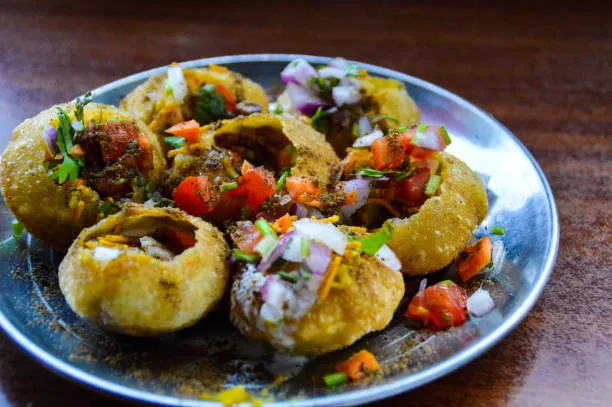

Home
Pani Puri

Description
Pani Puri, also known as Gol Gappa or Phuchka in different parts of India, is a beloved street food snack that is enjoyed by millions across the country and worldwide. It is a burst of flavors and textures in one bite, making it a unique and exciting treat.
Pani Puri consists of small, hollow, crispy puris (or shells) filled with a variety of spicy and tangy ingredients. The fun lies in the way it’s eaten: the puris are first filled with flavored water (called "pani") and then popped into your mouth in one go. The dish offers a perfect balance of crunchiness, spiciness, sweetness, and sourness.
Making Pani Puri at home is a fun process that involves preparing crispy puris, flavorful fillings, and tangy, spicy water (pani).
Here’s a step-by-step guide on how to make Pani Puri from scratch:
Ingredients:
For the Puris (Puffed Shells):
- 1 cup semolina (sooji)
- 2 tablespoons all-purpose flour (maida)
- 1/4 teaspoon baking soda (optional, for extra puffiness)
- Pinch of salt
- Water (for kneading)
- Oil (for deep frying)
For the Filling:
- 2 large boiled potatoes (mashed)
- 1/2 cup boiled chickpeas (optional)
- 1 small onion (finely chopped, optional)
- Salt to taste
- 1 teaspoon chat masala
- 1/2 teaspoon red chili powder
- 1/4 teaspoon cumin powder
- Fresh coriander leaves (chopped, for garnish)
For the Pani (Flavored Water):
- 1/2 cup fresh mint leaves
- 1/2 cup fresh coriander leaves
- 1-2 green chilies (adjust to taste)
- 1-2 tablespoons tamarind pulp (or tamarind chutney)
- 1 teaspoon black salt
- 1 teaspoon roasted cumin powder
- 1/2 teaspoon chaat masala
- 1/4 teaspoon salt (adjust to taste)
- 1/4 teaspoon black pepper powder
- 4 cups cold water
- 1 tablespoon lemon juice
Instructions:
Step 1: Make the Puris
- Prepare the dough: In a mixing bowl, combine the semolina (sooji), all-purpose flour (maida), baking soda (if using), and a pinch of salt. Gradually add water and knead it into a smooth, stiff dough. Cover the dough with a damp cloth and let it rest for 20-30 minutes.
- Shape the puris: After resting, divide the dough into small portions. Roll each portion into small balls, then flatten them into small discs (about 1.5 inches in diameter). Roll them out as thin as possible to get crispier puris.
- Deep fry: Heat oil in a pan for deep frying. Once the oil is hot, carefully drop the discs of dough into the oil. Fry them on medium heat until they puff up and turn golden brown and crispy. Remove them from the oil and drain excess oil on paper towels.
- Cool the puris: Let the puris cool down completely. They should be crispy and hollow from the inside, perfect for filling with pani.
Step 2: Make the Filling
- Prepare the filling: In a bowl, mix the boiled and mashed potatoes with boiled chickpeas (if using). Add finely chopped onions, salt, chat masala, red chili powder, and cumin powder. Mix everything well.
- Garnish: Optionally, you can add some chopped fresh coriander leaves for extra flavor.
Step 3: Make the Pani (Flavored Water)
- Blend the herbs: In a blender, combine mint leaves, coriander leaves, green chilies, tamarind pulp, black salt, cumin powder, chaat masala, salt, black pepper, and lemon juice. Add a little water to help blend everything into a smooth paste.
- Prepare the pani: Transfer the paste into a large bowl or pitcher. Add cold water (around 4 cups) and mix well. Taste the pani and adjust the seasoning if needed (add more salt, tamarind, or spice as per your preference). Chill the pani in the refrigerator for at least 30 minutes for the best flavor.
- Optional: You can also add a little jaggery or sugar to balance the tangy flavors of the tamarind.
Step 4: Assemble and Serve
- Assemble the Pani Puri: Take one puri and gently poke a hole in the center using your finger or a small spoon. Be careful not to break it.
- Fill the puri: Stuff the puri with a spoonful of the potato-chickpea filling.
- Add the pani: Dip the filled puri into the chilled, tangy flavored water or spoon some pani directly into the puri. (It's best to do this just before eating, so the puris stay crisp.)
- Enjoy immediately: Pop the filled puri into your mouth in one bite, allowing the burst of flavors to tantalize your taste buds.
Tips:
- Crispness: If you want extra crispy puris, make sure the dough is stiff, and the oil is at the right temperature (medium to high heat) for frying.
- Adjust spice levels: You can increase or decrease the amount of green chilies, chili powder, and chaat masala in the pani based on your spice tolerance.
.
- Storage: The puris can be stored in an airtight container for a few days. The pani is best served fresh and chilled.
Enjoy making and indulging in this delightful, crunchy, and flavorful Pani Puri at home!